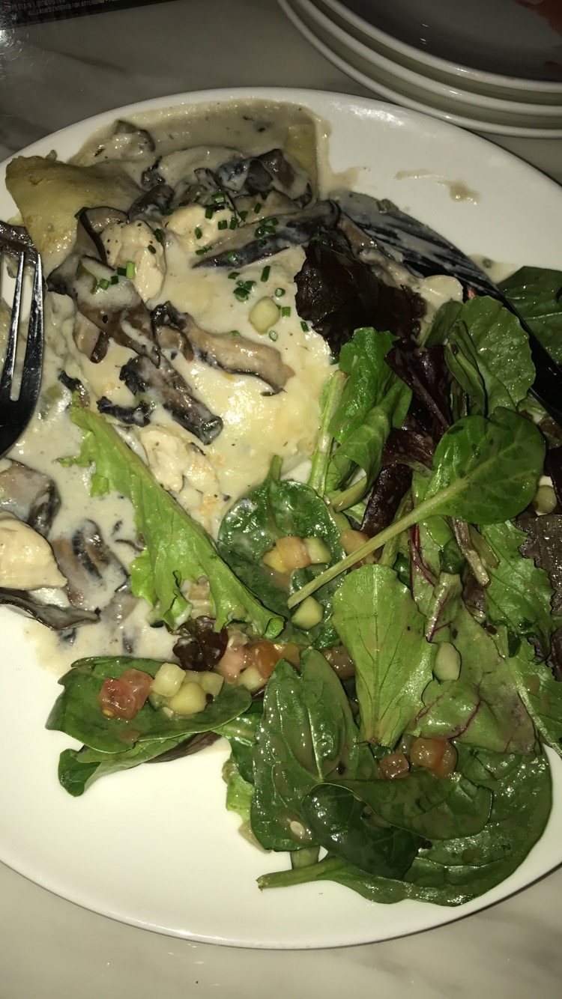
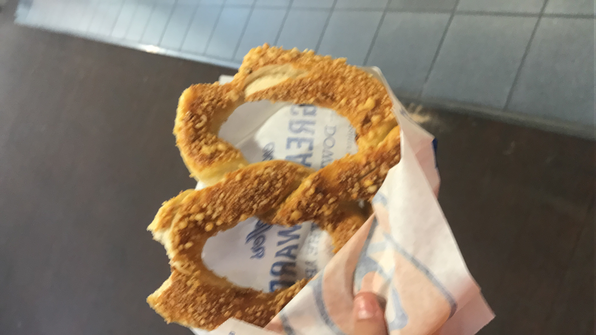

The United States is a rich and varied blend of peoples, religions, and cultures, and this diversity is reflected in its cuisine.
 The food from europe is rich and varied thanks to millenia of heritage across the continent. As the leaders from the old world they have kept their cuisine along with their cultures, resulting in a myriad of flavors and styles of cooking that are as varied as the countries on the continent.
Asian cuisine includes several major regional cuisines: East Asian, Southeast Asian, South Asian, Central Asian, and Middle Eastern. A cuisine is a characteristic style of cooking practices and traditions,usually associated with a specific culture. Asia, being the largest and most populous continent, is home to many cultures, many of which have their own characteristic cuisine. Ingredients common to many cultures in the East and Southeast regions of the continent include rice, ginger, garlic, sesame seeds, chilies, dried onions, soy, and tofu. Stir frying, steaming, and deep frying are common cooking methods.

first of all It’s not just the joy of eating. Turns out, food flavors life’s most significant twists and turns. I chose this topic, because food is one of the things i love the most, i mean without it i´ll be dead (well, everyone lol) but food is fantastic, is love, is life, we can ejoy a meal thanks to the food, i mean thanksgiving without a turkey it wouldn´t be thanksgiving.
FOOD IS BAE.
Name:
Last name:
City:
State:
Adress:
Comments:
the top 50 of the best food around the world